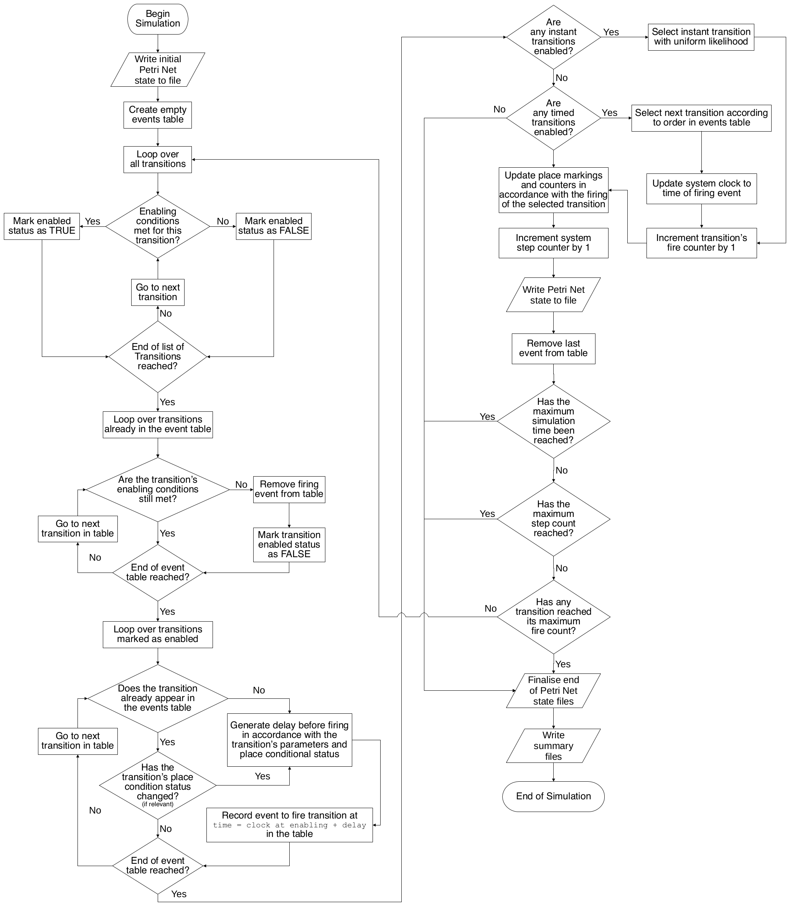

[makˈkjaːto], from the Italian, meaning "spotted", "marked", or "stained", in reference to a latte macchiato, which resembles a Petri Net place with a token.
A Simple Petri Nets Implementation for Python 3
Version 1-4-4
© Dr. Mark James Wootton 2016-2021mark.wootton@nottingham.ac.uk
Contents
Dependencies
- NumPy — only required by analysis scripts
- Matplotlib — only required by analysis scripts
Graphiz — only required by visualisation features
Microsoft Visio — only required for graphical Petri Net construction tool
Installation
Download
Cloning the repository via Git is the recommended method for installing Macchiato. To see whether you have Git installed and the current version, open a command-line terminal and run:
$ git --versionBe aware that the symbol $ (alternatively, > or %, depending on shell type) indicates a terminal command, and should not be copied with the rest of the line. If no Git installation is found, consult this page for further instructions. It is recommended to create an SSH key and add it to one’s GitHub account to eliminate the need for password entry during pull requests.
Create a folder named git in your home directory and enter it in the terminal. The following command will create a local instance of the repository in the current working directory:
xxxxxxxxxx$ git clone git@github.com:MJWootton-Resilience-Projects/Macchiato.gitor if SSH key authentication has not been set up, the repository can instead be accessed via username and password through the command:
xxxxxxxxxx$ git clone https://github.com/MJWootton-Resilience-Projects/Macchiato.gitTo update the repository, execute the following command in its directory:
xxxxxxxxxx$ git pullIn the following sections, it is assumed that Python 3 is invoked by python. Depending on system step up, one may need to substitute this command with python3. The default version of Python can be found via:
xxxxxxxxxx$ python --versionIf not already installed, Python 3 can be obtained from www.python.org
System Integration
One can configure their system to allow Macchiato to be accessed conveniently from any working directory within a terminal or Python session, such that simulations can be initiated with command Macchiato from any location, and that a Python script using the module need only include the line import Macchiato, regardless of the file path.
Bash & Z Shell
In a Bash or Z Shell environment, such as is default in many Linux distributions and of MacOS, add the following two lines to the file found in the Home directory with the name .bashrc or .zshrc respectively.
xxxxxxxxxxalias Macchiato="python $HOME/git/Macchiato/Macchiato.py" # Execute Macchiato simulations from any directoryexport PYTHONPATH=$HOME/git/Macchiato:$PYTHONPATH # Make Macchiato availible to import from any directoryThe changes will take effect immediately in any new terminal instance. In an existing terminal, you can update via the command source ~/.bashrc or source ~/.zshrc as appropriate.
You may need to change the path $HOME/git/Macchiato if Macchiato was installed at a different location. Likewise, you may need to substitute python3 for python on the first line.
PowerShell
For users of PowerShell on Windows 10, the integration must be done in two steps. To allow easy execution of Macchiato simulations from any directory, create a folder in Documents called WindowsPowerShell. In this new folder, add a plain text file with the name Microsoft.PowerShell_profile.ps1 containing the lines:
xxxxxxxxxxfunction Macchiato { # Execute Macchiato simulations from any directory python $home\git\Macchiato\Macchiato.py $args}To make Macchiato available for import to any Python instance or script, open "Settings" from the Start Menu and search for "advanced system settings". You will see a result for "View advanced system settings". Clicking on this option will open a window title "System Properties". On the "Advanced" tab, there is a button labelled "Environmental Variables", which brings up a window with the same name. In the beneath the "System variables" selection, click on "New...". In the field "Variable name" enter PYTHONPATH and in "Variable value" enter:
xxxxxxxxxxC:\Users\{YOUR_USERSNAME}\git\Macchiato
Click "OK" on the three open windows to save your changes, which will take effect for any new PowerShell instance. If a variable called PYTHONPATH already exists, click "Edit..." instead, and append the directory of the Macchiato project folder to the of the "Variable value", separating it from the preexisting content with ;.
You may need to change the above paths if Macchiato was installed at a different location. Likewise, you may need to substitute python3 for python in the profile file.
Graphviz
The recommended method for installing Graphviz is via a package manager, such that the rendering of *.dot files as images be made available at the command line via $ dot {etc}.
Linux
Graphviz is available through the package managers of most Linux distributions
apt (Debian, Ubuntu, Linux Mint, Pop!_OS, elementary OS, etc.):
xxxxxxxxxx$ sudo apt install graphvizyum (Fedora, CentOS, RHEL, Scientific Linux, Yellow Dog Linux, Oracle Linux, etc.)
xxxxxxxxxx$ sudo yum install graphvizpacman (Arch, Manjaro, etc.)
xxxxxxxxxx$ sudo pacman -Syy graphvizWindows
Windows users will need to install an appropriate command line installer first, for example Scoop, from which Graphviz is installed by:
xxxxxxxxxx> scoop install graphvizIt may also be necessary to run the command dot -c with administrative privileges to complete the process.
It is also possible to download an installer from Graphviz's website. This continues to be available as a legacy option, in which case the directory containing the executable dot.exe must be manually specified as the value of the docLoc parameters. This method is not recommended.
MacOS
On MacOs install Graphviz via Homebrew, via:
xxxxxxxxxx% brew install graphvizPetri Net Integration Algorithm
The below flowchart depicts the process followed by Macchiato to execute an individual Petri Net simulation.

Usage
Note: It is assumed that the reader is already familiar with the basics of standard Petri Net modelling[1].
Macchiato Petri Net Files (*.mpn)
Macchiato Petri Net structures are stored in *.mpn files. One may also create and manipulate Petri Net structures in a Python script using the tools provided in the module PetriNet.py, see Scripting Tools.
Substituting the appropriate file paths into the following command will run a batch of N simulations.
xxxxxxxxxx$ python /path/to/Macchiato.py /path/to/PetriNet.mpn NIf the instructions for system integration have been followed, the command can shortened to:
xxxxxxxxxx$ Macchiato /path/to/PetriNet.mpn NNote that regardless of the locations of Macchiato or the Petri Net file, the simulation output will be delivered within the current working directory. If N is omitted from the above command, the simulations will continue until the total time simulated across all iterations reaches the product of maxClock and simsFactor, see Simulation Parameters. Additional terminal output can be activated by placing V at the end of the above command, but be aware that this will impact performance.
Structure
An *.mpn should be comprised of three sections — the simulation parameters, the places list, and the transitions list. To mark the beginning of of the latter two, the lines Places and Transitions must respectively appear in the file. Lines beginning with # are treated as comments. Comments must be on a separate line to structural lines. An example file is seen in Example.mpn.
Simulation Parameters
If a parameter is not specified in the *.mpn file, it takes its default value. To set a parameter, add a line with its name, followed directly by a single space and the desired value.
name— The label given to the Petri Net and used in output directoriesunits— The units of time to be used by the Petri Net (Default ishrs)runMode— The mode of integration to be used for simulation (Default isschedule). Don't play with this setting unless you know what you are doing.dot— Toggle creation of snapshots of the Petri Net during simulation in*.dotformat (Default isFalse).visualise— The file format for images produced from snapshots. Supported formats include, but are not limited to,svg(recommended),pdf, andpng(Default isNone, which produces no images. Note thatdotmust also be set toTrue, otherwisevisualisewill have no effect).details— Toggles label with Petri Net name, step, and clock in visualisations (Default isTrue)useGroup— Toggles use of place and transition groups in visualisation (Default isTrue)orientation— Orientation of Petri Net in visualisations. Options areLR,RL,TB, andBT(Default isNone— produces default behaviour of Graphviz algorithm).debug— Default isFalse.maxClock— Greatest clock duration permitted in any one simulation (Default is 106unitsof time)maxSteps— Greatest number of steps permitted in any one simulation (Default is 1012)simsFactor— Parameterises the total number of simulations performed (Default is 1.5×103). Repetition of simulations ends once the total simulated time surpasses the product ofmaxClockandsimsFactor. If a set number of simulations is specified at the command line,simsFactoris overruled.dotLoc— (Default isNone) Directory containingdot.exefor legacy mode visualisations (not recommended).
Important Note: It is not recommended to use the visualise option beyond testing and development of Petri Nets and performance is significantly affected. Instead, consider using the tools provided by mpn_to_dot.py and dot_to_image.py after the simulations are complete. If one is not intending to use dot_to_image.py, then it is also recommended to set dot to False.
Places
The places section of the file begins following the line Places. To add a place, simple add a new line with the desired name (spaces are not permitted). By default, a place's initial token count is zero, but a value may be specified after a space on the same line, e.g. P1 2 will add a place of name P1 with two tokens at the start of each simulation.
Transitions
The transitions section of the file begins following the line Transitions. A transition and its properties are specified with a line with the following format (do not include brackets):
xxxxxxxxxx{Name}:{Timing}:{Parameters} IN {places} OUT {places} VOTE {threshold} RESET {places}
Timing specifies the duration from the enabling of a transition to its firing, which may be instantaneous, of a fixed length, or generated from a stochastic distribution. Most options require one or multiple parameters, subsequently delimited by : and expressed in terms of the parameter units where relevant. The following timing options are available:
instant— A instant transition will fire on the next simulation step with zero advancement of the system clock. If multiple instant transitions are simultaneously enabled, one will be chosen at random with uniform weight.delay:a— A transition with a fixed delay fired after a set durationaonce enabled.uniform:u— A transition with a uniform distribution will fire at some time, t, in the interval 0 < t <u.cyclic:c:ω— A cyclic transition fires at the next instance at with the simulation clock is a non-zero integer multiple ofc. The second parameterωallows one to apply an offset. For instance, if two transitions with the parameterscyclic:1:0andcyclic:1:0.5are persistently enabled, they will respectively fire at the system times, 1, 2, 3unitsetc, and 1.5, 2.5, 3.5unitsetc.weibull:<t>:β:σ— A transition with this option will be characterised by a Weibull distribution[2] with mean<t>and shape parameterβ. Its firing time, t, is given by , where η is the scale parameter, such that , and X is a random variable uniformly distributed in the range 0 < X < 1, with Γ being the Gamma Function[3]. The parameterσis optional and is used when the mean time has an associated uncertainty, such that the scale parameter used for each firing delay calculated is produced from a normal distribution[4] with mean equal to the default η and a standard deviation ofσ.lognorm:μ:σ— A transition with log-normal distribution[5] timing fires after time, t, where , with X being a standard normal variable, andμandσrespectively being the mean and standard deviation of the natural logarithm of the firing delay.rate:r— A transition of this type fires with a constant rate parameterised byr. Firing time, t, is exponentially distributed [6], such that , where X is a random uniform variable in the range 0 < X < 1.beta:p:q:k— A transition with the Beta Distribution[7] produces a firing delay, t, in the interval 0 < t < 1, parameterised bypandq, which weight the probability density towards the extreme or central regions of the available outcome space. An optional parameterkcan be added to scale the distribution, such that the range of possible values becomes 0 < t <k.
Note that a transition must be continuously enabled for the duration from firing time generation until it fires. If its enabled status is interrupted, its scheduled firing time will be discarded.
Arc Properties
Any places listed after IN and OUT will be connected to the transition by incoming and outgoing arcs respectively and places listed should be separated by a single space. The weight of an arc is 1 by default and can be given some other value by appending it, separated by :, to the name of the relevant place in the list. for example, IN P1 P2:3 P3 OUT P4 P5:2 specifies three incoming arcs, the second of which has a weight of 3, and two outgoing arcs, the latter of which has a weight of 2.
An incoming arc may be designated as a place conditional or inhibit arc with the code :pnc or :inh respectively, placed after the arc weight. The action of an inhibit arc is simple to disable its target transition when its weight is met, regardless of the status of the other arcs. A place conditional arc does not enable or disable its target transition but instead modifies its firing time parameters. The modification factor for a transition with C place conditional arcs is a function of the arc weights (which can be non-integer for place conditionals) and the number of tokens on the connected places, such that, . The alterations to parameters are then, , , , , , , , and .
Additional Transition Features
Transitions may also be given the properties VOTE and RESET. A voting transition does not require all of its incoming arc weights to be met to become enabled. Instead, only a given threshold need be met, placed after VOTE, separated by a single space. For example, a transition, T1 with the place relationship given by T1:instant IN P1 P2 P3 OUT P4 VOTE 2 would only require two of P1, P2, and P3 to hold a token in order to fire. Note that all incoming arcs whose weight is satisfied are treated normally for the purposes of removing tokens when the transition fires. A reset transition has an associated list of places, delimited by : and following RESET, separated by a single space, e.g. RESET P1:P2:P3. When the transition fires, the places marked for reset are restored to the token count held at the beginning of the simulation.
Example
x# Petri Net Parametersname Testunits hrsrunMode schedulevisualise Nonedot False# Run ParametersmaxClock 1E3maxSteps 100simsFactor 1# Build Petri NetPlacesP0 2P1P2P3TransitionsT0:lognorm:1:1 IN P0 OUT P1 P3T1:weibull:1:0.5 IN P1 OUT P2:2T2:delay:2 IN P2:2 P3:inh OUT P1T3:rate:15 IN P3:5:pcn P1 OUT P2R:cyclic:7:1 IN P2 RESET P0:P1:P3V:beta:1:2:0.25 IN P0 P1 P3 OUT P2 VOTE 2
Graphical Petri Net Construction with Microsoft Visio
As an alternative to transcribing a Petri Net structure by hand, it is possible to graphically construct a model in Microsoft Visio and export as an *.mpn. This is general considerably simpler and more expedient, and has the secondary benefit of concurrently producing high quality figures for reports and publications.
In the directory PetriNetDrawingTools, one will find a Microsoft Visio drawing and a stencil file. Create a copy of these files to produce Petri Nets graphically — both must be found in the same directory. To use the tool, make sure that stencils and shape data are set to be visible and that macros are enabled. The shortcut Ctrl+e will export the Petri Net to an *.mpn file with the properties specified in the Parameters object. It is recommended to export models frequently to avoid being caught out by the occasional idiosyncrasies of Microsoft Visio.
Full documentation for the tool is available here.
Scripting Tools
The Python modules provided by Macchiato.py and PetriNet.py can be imported into a script to provide a range of tools suitable for more complex creation and manipulation of Petri Net models, as well as basic functions such as reading and writing from *.mpn files. For example, if one wished to create a range of similar systems with varying parameters or varying number of duplicated sections, the scripting tools would enable the automation of this process. The documentation for the features is found within the module files themselves, with descriptions provided for each object type, method, and function. A few examples are found below.
Reading & Writing *.mpn Files
Importing Macchiato.py gives access to the read and write functions, which allow the handling of *.mpn files. The function read takes a file path and returns a PetriNet object (as defined in PetriNet.py) and list object containing the simulation parameters in the file.
xxxxxxxxxx# Import moduleimport Macchiato as MC# Read *.mpn filepn, simParams = MC.read('/path/to/PetriNet.mpn')Conversely, write takes a PetriNet object and writes it to an *.mpn file
xxxxxxxxxx# Import moduleimport Macchiato as MC# Creat a Petri Netpn = fooPetriNet# Write Petri Net to *.mpn fileMC.write(pn, overwrite=False, rp=None, altName=None)Note the parameters overwrite, rp, and altName are optional, and respectively control whether existing files can be overwritten (default value is False), a list object containing the simulation parameters written to the file (default value is None, resulting in the default parameters being used, see Simulation Parameters), and the name given to the Petri Net in the file produced (default value is None, which results in no change in name).
Manipulating Petri Nets
To create a PetriNet object from scratch, import the module PetriNet.py and initialise an instance of the class, with any parameter not provided by the user defaulting to the value shown in the following example (a value should ideally always be given for name).
xxxxxxxxxx# Import moduleimport PetriNet as PN# Create instance of PetriNet object (with default values shown - these may be ommitted)pn = PN.PetriNet(name=None, units='hrs', runMode='schedule', dot=False, visualise=None, details=True, useGroup=True, orientation=None, debug=False, dotLoc=None)The structure of a PetriNet object created by either of methods discussed may be constructed or edited by the methods, addPlace, rmvPlace, addTrans, and rmvTrans. The PetriNet object has the attributes places and trans (both of type list) which store objects of the class Place and Trans respectively. The Trans object has the methods addInArc, rmInARc, addOutArc, and rmOutARc, to link and unlink it from Place objects via Arc objects. In the following example, a simple loop is created from two places and two transitions.
xxxxxxxxxx# Import moduleimport PetriNet as PN# Create instance of PetriNet objectpn = PN.PetriNet(name='Example')# Add placespn.addPlace('P1', tokens=2)pn.addPlace('P2')# Add transition T1 and its arcspn.addTrans('T1', weibull=[100000, 1.2])pn.trans['T1'].addInArc('P1')pn.trans['T1'].addOutArc('P2')# Add transition T2 and its arcspn.addTrans('T2', delay=48)pn.trans['T2'].addInArc('P2', weight=2)pn.trans['T2'].addOutArc('P1', weight=2)The optional parameters for addPlace are:
tokens— Type:integer. The initial number of tokens held (Default is 0)min— Type:integer. Minimum limit for tokens held by the place (Default isNone, i.e. no lower limit)max— Type:integer. Maximum limit for tokens held by the place (Default isNone, i.e. no upper limit)limits— Type:listof length two, containingintegertypes. If the number of tokens held by the place is found to be less than the first entry or greater than the second, a simulation of the Petri Net is terminated.- group — Type:
integer. Grouping label for Graphviz
The optional parameters for addTrans are:
A timing parameter, pick one of the following or omit it to produce an instant transition:
rate— Type:float. Mean rate of fire per unit timeuniform— Type:float. Uniformly distribution in 0 touniformdelay— Type:float. Value of fixed delayweibull— Type:listoffloattypes. Two or three of parameters for a Weibull distribution (<t>andβ, and optional uncertainty parameterσ).beta— Type:listoffloattypes. Two parameters for Beta distribution (pandq) and optional scale parameter (k).lognorm— Type:listoffloattypes. Two parameters for log-normal distribution (μandσ).cyclic— Type:listoffloattypes. Two parameters for cyclic distribution (candω).
maxFire— Type:integer: Maximum number of times the transition can fire before the simulation terminatesreset— Type:listofstringtypes: The labels of places which are reset when the transition fires.vote— Type:integer. Voting threshold for the transition (Default isNone, which results in no voting behaviour)group— Type:integer. Grouping label for Graphviz
The optional parameters for addInArc are:
weight— Type:integer. The weight of the arctype— Type:string. The type of the arc. The available options are:'std'— a normal arc and the default value'inh'— an inhibit arc'pcn'— a place conditional arc
There is one optional parameter for addOutArc:
weight— Type:integer. The weight of the arc.
The methods rmvPlace, rmvTrans, rmInArc, and rmOutArc all remove objects of the corresponding type from the parent object (a PetriNet for Place and Trans, a Trans for Arc). They all only take only one argument, i.e. a string containing the relevant object label, which is the label of the object itself for Place and Trans, but is the label of the connecting Place object for Arc objects. Removing a place or transition from the Petri Net also removes all of its associated arcs.
The PetriNet object has the method run which will simulate the Petri Net specified up to a given maximum number of steps (integer), and optionally, a maximum simulated time (float). In the example below, a PetriNet object, pn, is to be run for maximum of 100 steps or a maximum simulated time of 5×105 units.
xxxxxxxxxxpn.run(100, maxClock=500000)This makes it possible to run any arbitrary code between steps for highly customisable simulation scripts. For example:
xxxxxxxxxx# Import modulesimport Macciato as MCimport PetriNet as PN# Create instance of PetriNet objectpn = PN.PetriNet(name='Example')# Add placespn.addPlace('P1', tokens=2)pn.addPlace('P2')# Add transition T1 and its arcspn.addTrans('T1', weibull=[100000, 1.2])pn.trans['T1'].addInArc('P1')pn.trans['T1'].addOutArc('P2')# Add transition T2 and its arcspn.addTrans('T2', delay=48)pn.trans['T2'].addInArc('P2', weight=2)pn.trans['T2'].addOutArc('P1', weight=2)# Write initial structure to *.mpn fileMC.write(pn, altName='%s_start'%pn.name)# Begin simulation processwhile True: pn.run(1) if fooCondition: # Modify the Petri Net or run some other code # ... fooProcess(pn) # ... else: # Conditions for terminating simulation # ... break# Write final structure to *.mpn fileMC.write(pn, altName='%s_end'%pn.name)Analysis
Four Python scripts are available in the Analysis directory to aid in the extraction of results from Petri Net simulations. As the data produced by Macchiato is saved in *.csv format, it is fairly simple to produce new analysis tools and users are encouraged to do so.
Documentation for the usage of the analysis scripts is found here.
Visualisation
In the Visualisation directory, two scripts are available to produce images of Petri Nets from *.mpn files or Macchiato simulation output. These depend on Graphviz and are best suited for inspection and verification rather instead of creating report quality images, for which the Visio tools are recommended.
Documentation for the usage of the visualisation scripts is found here.
FMU Interface
Macchiato Petri Nets can also be used in conjunction with a physical model provided in FMU format, the tools for which are provided in the FMUInterface directory.
Acknowledgements
With thanks to Dr Robert "Larus" Lee for developing the original Macchiato stencil and macro for Microsoft Visio.
References
[1] Carl Adam Petri. Kommunikation mit Automaten (In German). PhD thesis, Technical University Darmstadt, 1962.
[2] Athanasios Papoulis and S. Unnikrishna Pillai. Probability, Random Variables and Stochastic Processes. McGraw Hill, 4th edition, 2002
[3] Eric W. Weisstein. "Gamma Function." From MathWorld--A Wolfram Web Resource. www.mathworld.wolfram.com/GammaFunction.html Accessed October 2020, Last edited: 2005.
[4] Eric W. Weisstein. "Normal Distribution." From MathWorld--A Wolfram Web Resource. www.mathworld.wolfram.com/NormalDistribution.html Accessed October 2019, Last edited: 2019.
[5] Brian Dennis and G. P. Patil. Lognormal Distributions, Theory and Applications. Marcel Dekker New York, 1987.
[6] Eric W. Weisstein. "Exponential Distribution." From MathWorld--A Wolfram Web Resource. https://mathworld.wolfram.com/ExponentialDistribution.html Accessed October 2019, Last edited: 2006.
[7] Eric W. Weisstein. "Beta Distribution." From MathWorld--A Wolfram Web Resource. https://mathworld.wolfram.com/BetaDistribution.html Accessed March 2021, Last edited: 2003.